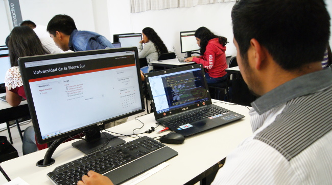

Las nuevas propuestas de la carrera de Informática
La carrera de Informática nos muestra los dos proyectos a cargo de los alumnos del quinto semestre de la licenciatura.
En esta ocasión sabemos que los alumnos de 5to semestre estan trabajando en dos proyectos para la universidad, los cuales son: La renovación de El Unsito y un Punto de venta para la clínica universitaria de odontología de la universidad.
En palabras de los alumnos nos comunicaron que a pesar de parecer un gran reto, estos proyectos son nuevas oportunidades de aprendizaje.
Por el momento no nos queda más que esperar por el desarrollo exitoso de ambos proyectos y no solo eso, sino también poder dar un gran uso tanto al nuevo punto de venta en el CEODON como al renovado Unsito que hacia ya tiempo no regresaba como nuestra querida gaceta universitaria.